404
PÁGINA NÃO ENCONTRADA
PARECE QUE VOCÊ SE PERDEU!
O link pode estar quebrado ou a página foi removida. Escolha um caminho abaixo:

PÁGINA NÃO ENCONTRADA
PARECE QUE VOCÊ SE PERDEU!
O link pode estar quebrado ou a página foi removida. Escolha um caminho abaixo: